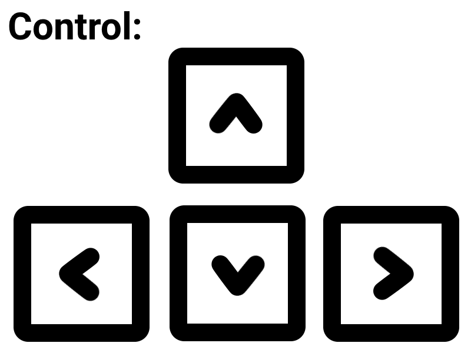
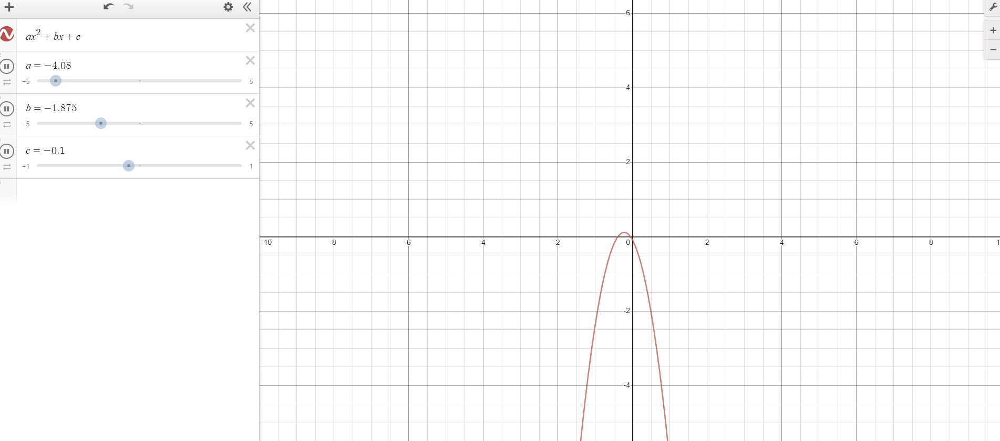
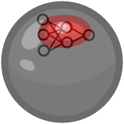
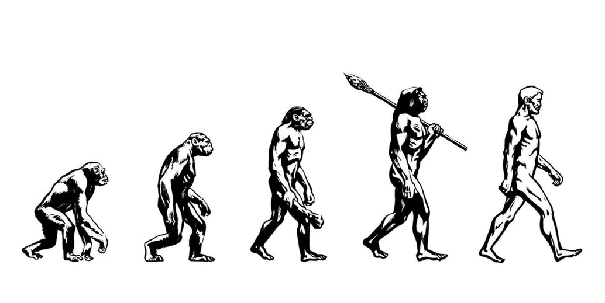
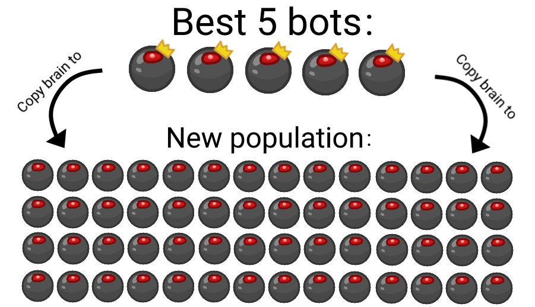
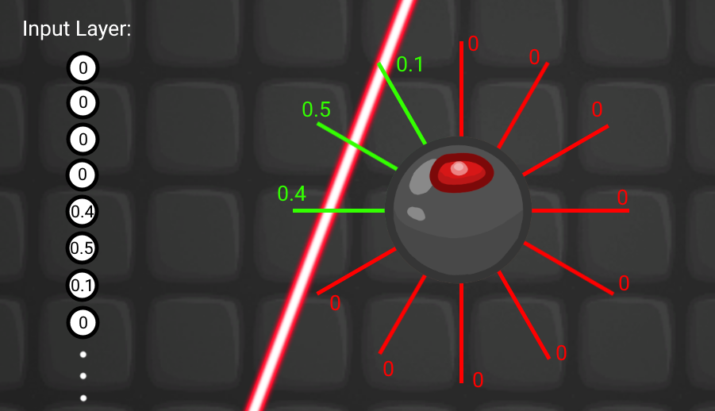
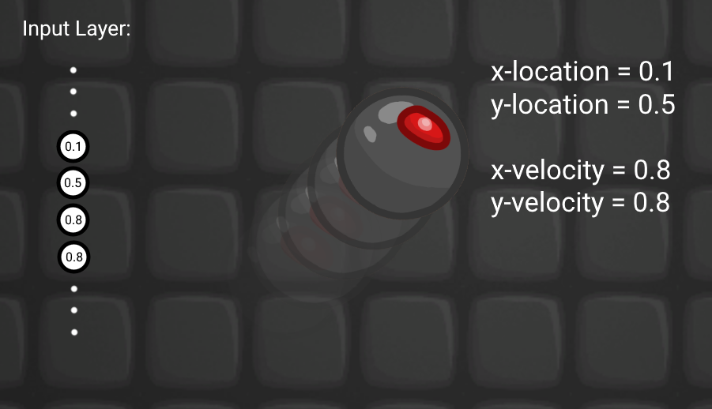
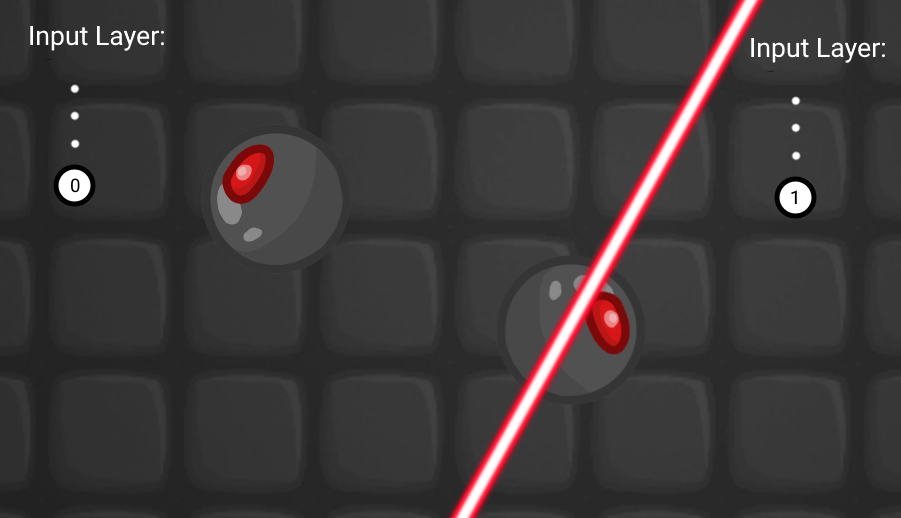
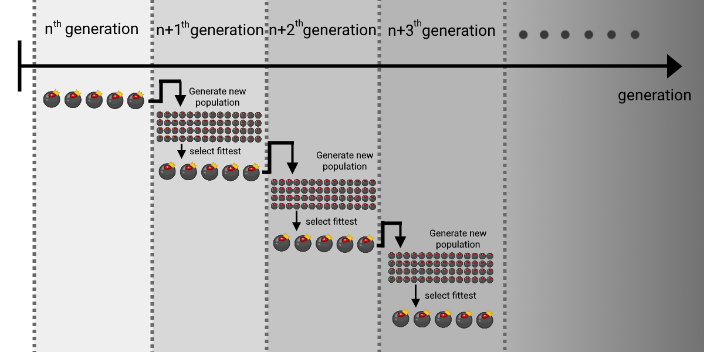

This is a game of dodging lasers, the only objective of the game is to survive as long as possible, there are 2 bots in the game too, both of them have been trained using neuroevolution.
What is NeuroEvolution
You can split the term into 2 parts, "Neuro" and "Evolution". Let's look at each of these words individually.
Neuro


"Neuro" refers to neural network. Neural network is a mathematical function, which takes a list of numbers(vector) as inputs, then outputs another list of numbers(vector).

Neural network is a function that have coefficient or parameters, which you can change in order to achieve a different output.
Just like for quadratic function (ax^2 + bx + c = y) where a, b and c are parameters which you can change to achieve a different result.

In this game, the neural network takes information from the environment as input, then outputs the decision of the bot, just like how our brain takes sensory stimuli as inputs, then outputs decision. So neural network is somewhat the brain of the bots.
But how should you choose the parameters for the neural network in order to get maximum performance? This is where the "Evolution" part comes into play.
Evolution

"Evolution" refers to genetic algorithm. Genetic algorithm is an algorithm based on the theory of natural selection, which means that only the fittest organism can survive, only the organism with desirable features can pass down these features to their offspring, which explains how organism evolve. There are 5 basic steps in genetic algorithm:
Here let's define of the terms:
- generation - 1 generation corresponds to 1 population. A generation starts when a new popoulation is initialized, and it ends when the next population is initialized.
- brain - from now on I am going to use brain and neural network interchangeably
- population - A bunch of bots that are spawned in at the same time
1. Initilization
Start a new generation, initialize a population. A bunch of bots are create, where each of them has a neural network acting as their brain

2. Selection
Select the fittest. The bots are forced to play the laser game, where all the bots with a weak neural network will touch the lasers and die, only the bots with the best neural network can survive

3. Crossover
Create a whole new population based on the fittest bots from the previous population. A new population of bots are initialized, and their brain are copied from the 5 bots that survived the longest

4. Mutation
The gene of the new bots are mutated. In the game above, the parameters of the neural network of the bots in the new population is slightly changed.

5. Repeat
End current generation, then repeat step 2-4 with the newly created population.

Architecture and Parameters
This section is for people who are familiar with neural network already. Also the information provided in this section some of the details are ommited, a more detailed and accurate information can be found in the "Mathematical Details of the Architecture" section.
Architecture

- Layer: 3
- Input Layer Size: 17 units
- Hidden Layer Size: 5 units
- Output Layer Size: 4 units
Input Layer

- 12 of the input units are ray detection (1 for each ray): each units represent the distance of the bot from the laser

- 4 of the input units are x position, y position, x velocity and y velocity

- 1 of the input units is the center detection: the unit will be 1 when bot is in a laser, else it will be 0

Also each laser has an internal timer, where it is initially 0 when spawning the laser, then it increases until the spawn animation has ended, the timer will stop at 1
All the ray detection inputs are multiplied by the internal timer of the laser that it detected.
Output Layer

Each of the output units corresponds to one of the arrow keys. So the neural network is controlling the bot just like how you control your character in the game.
Parameters
- Population Size: 60
- Mutation Rate: 0.1 and 0.2 (the mutation rate of the two bots are different)
- Mutation Magnitude: 0.25
- Weight Clamping: only allow weights to be between -1 and 1
Exploration vs Exploitation
In reinforcement learning, there is a thing called explore exploit dilemma. Explore refers to the bot constantly try out new things in order to find a better strategy. Exploit refers to the bot uses its current knowledge and do things that it knows is good for sure.
In other word, this dilemma is about how much a bot should stay in its comfort zone.
Exploitation



In the evolution process, the best bots from the previous population will also be included in the current populations. This can ensure that there is enough exploitation.
Also, the best bots so far will also be included in the current population too. Since apparently the technique above still doesn't give enough exploitation.
Exploration

The lasers on the wall aren't there originally, I added them because without them, the bots will all just go to a wall and do nothing, since the probability of dying when staying at a wall is smaller. In other words this is reducing exploitation.
Mathematical Details of the Architecture
Raw inputs from the environment:
\(x_{raw}\) - x position of the bot, where \(-4.37 \le x_{raw} \le 4.37\)
\(y_{raw}\) - y position of the bot, where \(-8.25 \le y_{raw} \le 8.25\)
\(u_{raw}\) - x velocity of the bot, where \(-3 \le u_{raw} \le 3\)
\(v_{raw}\) - y velocity of the bot, where \(-3 \le v_{raw} \le 3\)
\(L_{raw}=(l_1,l_2,l_3,l_4...l_{12})\) - vector of the distances from the lasers detected, where each component corresponds to one of the laser detecting rays, the component is 0 if that detecting ray doesn't detect any laser
\(T_{raw}=(t_1,t_2,t_3,t_4...t_{12})\) - vector of the internal timers of the lasers detected
\(c_{raw}=
\begin{cases}
1 & \text{if the bot is in a laser} \\
0 & \text{if the bot is not in a laser}
\end{cases}
\)
The above raw inputs are not used directly as the input of the neural network, they are all squeezed into processed inputs which are in the range of -1 to 1
Processed inputs:
\(x=tanh(\frac{x_{raw}}2)\) - processed x position
\(y=tanh(\frac89y_{raw})\) - processed y position
\(u=tanh(\frac43u_{raw})\) - processed x velocity
\(v=tanh(\frac43v_{raw})\) - processed y velocity
\(L=T\odot 0.85^{\frac{10}3L}\) where \(\odot\) denotes the hadamard product (elementwise product) and \(0.85^{\frac{10}3L}\) is an elementwise exponential function
\(I_0=concat(L, x, y, u, v, c_{raw})\) where concat is a function that concatenate a bunch of vectors into one long vector. E.g. \(concat((1, 2), (3, 4))=(1,2,3,4)\)
\(I=\)column matrix of \(I_0\)
We can now use \(I\) as the input of the neural network
\(H=tanh(W_{ih}I+B_{ih})\) where \(W_{ih}\) is the weight matrix between input and hidden layer, \(B_{ih}\) is the bias matrix between input and hidden layer, \(tanh()\) is an elementwise hyperbolic tangent function
\(O=sign(W_{ho}H+B_{ho})\) where \(W_{ih}\) is the weight matrix between hidden and output layer, \(B_{ih}\) is the bias matrix between hidden and output layer, \(sign()\) is an elementwise sign function
The matrix \(O\) has 4 components each corresponds to one of the four arrow keys.
Let \(O=
\left[
\begin{array}{}
o_{left} \\ o_{right} \\ o_{up} \\ o_{down}
\end{array}
\right]
\),
Lastly, the bot presses \(
\begin{cases}
\text{left arrow} & \text{if }o_{left} \gt o_{right} \\
\text{right arrow} & \text{if }o_{right} \gt o_{left} \\
\text{nothing} & \text{if }o_{left} = o_{right}
\end{cases}
\)
and also presses \(
\begin{cases}
\text{up arrow} & \text{if }o_{up} \gt o_{down} \\
\text{down arrow} & \text{if }o_{down} \gt o_{up} \\
\text{nothing} & \text{if }o_{up} = o_{down}
\end{cases}
\)